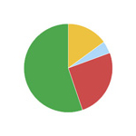

1.标准化、规范性和开放性;2.先进性、成熟性和使用性;3.可靠性、稳定性和容错性;4.可扩展性及易升级性;5.安全性和保密性;6.可管理性和可维护性
监测预警系统进行运算、模拟，对地质灾害的发生作出科学的判定和预测，及时发出预警信号，达到地质灾害监测预警效果。新系统的开发、运行与兰州市现有地质灾害信息系统和气象地质灾害监测平台相辅相成，数据共享、成果共用
地图演示

数据图表
数据查询
专家系统
自动预警
图形处理
(1)用户管理模块：改模块应包括权限认证和用户信息管理两个部分。用户需要登录才可以使用该系统，各个功能模块也需要登录后才可用。已登录用户可以添加、删除、编辑和设置其属性信息。系统可根据作业人员的操作产生操作日志，详细记录操作人员的所有操作动作，便于系统管理员进行用户查询、管理；发生异常情况时，可及时追溯当时操作人员，责任明确到个人。
(2)系统管理模块：管理员通过对系统的各项参数和环境，进行增加、修改、删除操作，实现对系统方便快捷的统一管理。
(3)基础信息管理：包括滑坡泥石流事件、稳定状况分布、灾害隐患点等基本数据、地质灾害预警短信发布对象数据、自动气象站实时每分钟雨量数据及其小时降水量、日降水量等基本信息，为系统提供基础数据支撑。
(4)三维地理信息模块：包括基本的GIS功能：对各类影像数据、矢量数据及标注图层进行管理，地图的放大缩小、漫游，距离量测、面积量测和体积量测，兴趣点(Point of Interest，POI)信息点查询定位，飞行和定位路线的录制，坡度、坡向信息以及地形坡面分析。系统预期可集成基础地理、基础地质、灾害易发性分区、防治规划等数据，以上数据分别来自WMS(Warehouse Management System，仓库管理系统)、ArcIMS(一种可伸缩的网络地图服务器软件)等数据源，可为地质灾害防治管理、决策提供基础数据。
(5)灾害数据管理模块：主要针对处地质灾害隐患点及重点防御监测点，建立其属性信息数据表并与地理信息相关联，实现在三维视图中的查询、编辑。灾害点管理应包括：空间信息管理、属性信息管理、群测群防信息管理和“地质灾害主要危险点防御预案表”的录入、查询以及备份。监测点管理内容包括：监测点空间信息、属性信息和监测设备信息(每个监测点可安装一台雨量计、一台裂缝位移测量仪和两部视频监控红外摄像机)等。
(6)信息浏览查询模块：用户可在三维视图上通过点选相应的灾害点或监测点进行信息查询，也可以通过关键字查询定位地标信息以及灾害信息。同时，可以查看监测仪器的实时和历史数据。雨量计监测数据分别以日降雨量和小时降雨量为单位统计为柱状图；裂缝位移测量仪监测数据统计显示为曲线图；监控视频查看窗口能够显示监测点的实时图像，这样即使是在中心机房也能全面系统地了解各个灾害点和监 控点的详细情况。
(7)预警管理模块：依据融合结果，按照参数标准自定义设置预警参数，对达到预警标准的站点执行自动预警操作，通过移动MAS(Mobile Agent Server，移动代理服务)服务器，系统使用者可以以手动或自动方式，向预先设置的职能部门领导及办事人员发出短信或电话预警信息。/p>
(8)报表图表模块：根据观测与处理数据，可实时生成日报表、月报表、降雨笼罩图、雨情分布图、等值线图等相关统计专题图表，为辅助决策提供重要参考资料。
(9)资料管理模块：系统可将文书、资料、科技成果等信息资源统一进行管理，并按照权限分为无条件共享、条件共享和不予共享等三种分类，建立对应信息共享机制： 由管理员统筹制定文档信息资源共享目录，建设信息资源共享交流平台。
(10)公文管理模块：，提供部门内部公文的提交、审批、流转、发送，提供流程管理工具，根据部门流程情况，用户可自己设置每个部门的公文审批流程，并将发送后的公文归档入库进行统一管理。
(11)网上信息发布模块：管理员通过本系统发布通知、公告、防汛信息等，用户将在门户网站，通知、公告栏中查看到当前最新的通知、公告信息。
(12)日志管理模块：日志记录谁(用户)在什么地方(记录机器IP)在什么时候进行了什么操作；管理员可以对日志进行查看，删除操作。通过完善的日志系统记录，记录详细的登录信息，业务操作信息和错误信息，为系统管理提供良好的基础。
| 工程名称 | 合作单位 | 描述 |
| 长沙轨道交通一号线省政府站基坑监测技术服务 | 中铁十二局集团公司 | 该项目利用ZD2000工程监测与灾害预防服务平台中的基坑远程监控系统对施工过程中结构体和周围环境的受力、变形进行监控，并将监测数据与预警信息实时传递给被服务单位 |
| 长沙南湖路过江隧道监控联测项目技术服务 | 长沙城投集团 | 该项目利用ZD2000工程监测与灾害预防服务平台中的基坑远程监控系统和隧道远程监控系统进行监控量测，监测内容包括东、西两头的盾构始发井深基坑，南北两向盾构隧道施工过程中结构体和周围环境的受力、变形监控。 监测工作受到业主单位的好评 |
| 长沙市河西交通枢纽工程施工监测技术服务 | 长沙综合交通枢纽建设投资有限公司 | 该项目利用ZD2000工程监测与灾害预防服务平台对整个工程的进行施工监控，并将技术结果实时传递给被服务单位 |
| 京港澳高速公路长沙黎托段改造工程第三方监测技术服务 | 长沙武广新城开发建设有限公司 | 该项目利用ZD2000工程监测与灾害预防服务平台和ZD基坑工程远程监测预警系统对整个工程的进行监测技术服务，并将技术结果实时传递给被服务单位 |
| 长湘高速特大桥施工监控技术服务 | 路桥国际股份有限公司 | 该项目利用ZD桥梁工程远程监测安全预警系统对整个桥梁的施工状态进行监控，并将监测结果实时传递给被服务单位 |
| 湖南新溆高速公路隧道施工监控量测技术服务 | 湖南新溆高速公路开发建设公司 | 该项目利用ZD隧道工程远程监测安全预警系统对整个隧道的施工状态进行监控，并将监测结果实时传递给被服务单位 |